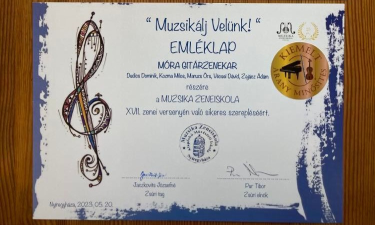

Versenyek
A legtöbb részvételem a "Muzsikálj Velünk!" nevezetű hangversenyeken volt. Ez minden évben megrendezésre került a Nyíregyházi Apáczai Csere János Általános Iskola és AMI intézményében, ahol általános iskolás diákok vehettek részt akár a környező városokból is. Amint elértem azt a szintet, hogy versenyekre járhatok, minden évben eljöttem/eljöttünk ide az iskolai zenekarommal. Szinte mindig a legjobb minősítést kaptuk, ami a "Kiemelt Arany Minősítés".

A második legtöbbet pedig a volt iskolámban megrendezett "Muzsikálj Velünk - Gitártalálkozó" volt, ahol nem volt semmi tét, csak egy 2 órás előadás, ahol különböző stílusú zenéket hallhattunk sok diáktól.
Ezeken kívül pedig volt még lehetőségem fellépni a Nyíregyházi Egyetemen, a városháza előtt karácsonyi előadás alkalmából, illetve számos előadáson az iskolámban.